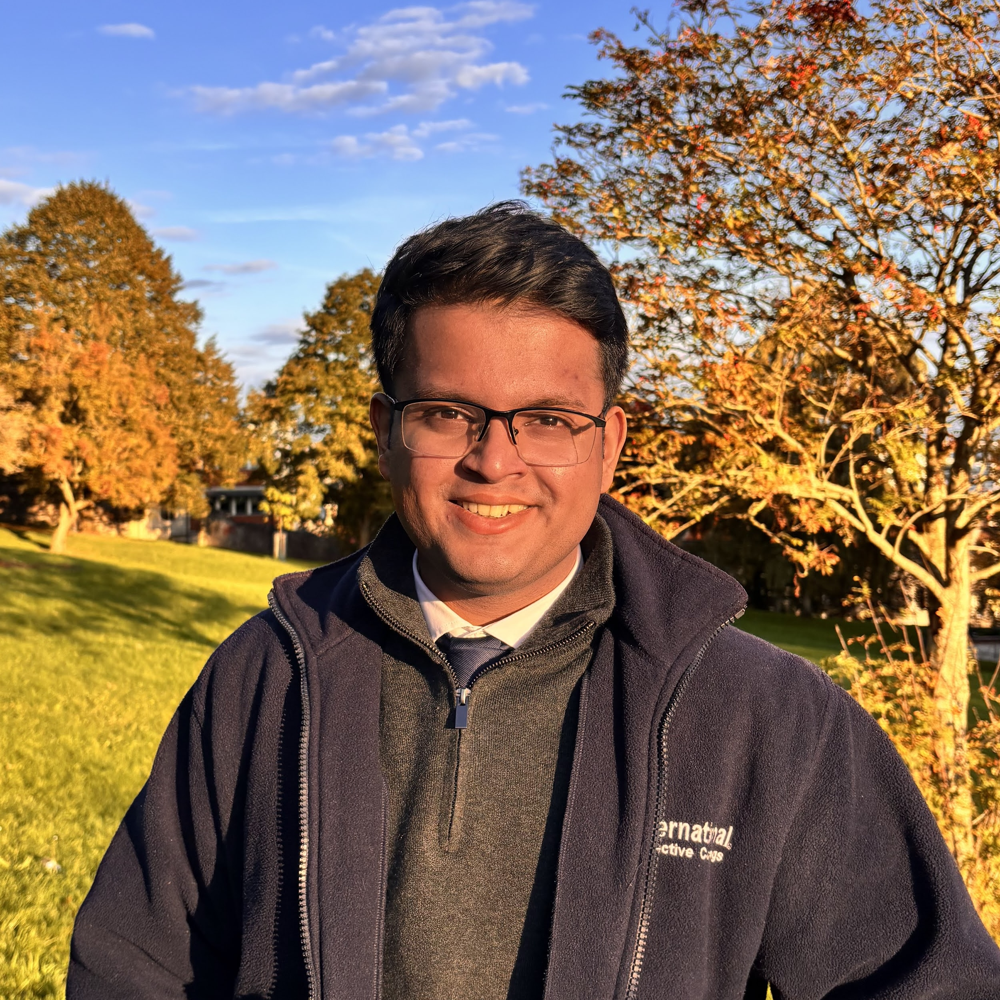

Jan'26 Aakash began his PhD in Computer Science at the University of Warwick.
About Me
Aakash is currently a doctoral student advised by Dr Fayyaz ul Amir Afsar Minhas at the Tissue Image Analytics Centre (TIA) Centre, under the School of Computer Science at the University of Warwick. Aakash's work focuses on developing machine-learning methods for computational pathology, particularly analysing whole-slide histopathology images to discover clinically relevant biomarkers and improve disease characterisation, as part of a joint industry-academia project with GSK. Previously, Aakash completed a MSc in Artificial Intelligence and Machine Learning from the University of Birmingham and a PgD and BSc from Ashoka University.
Contact
Aakash [dot] Rao [at] warwick [dot] ac [dot] uk
CS-3.18, Department of Computer Science, University of Warwick, CV4 7AL

Jan'26 Aakash began his PhD in Computer Science at the University of Warwick.
Sep'25 Aakash successfully defended his MSc thesis studying the controlled synthesis of high-resolution histopathology images.
Aug'25 Aakash achieved a distinction in his master's degree at the University of Birmingham.
Sep'24 Aakash's work on a high-resolution oral cancer image dataset was published at (Nature).